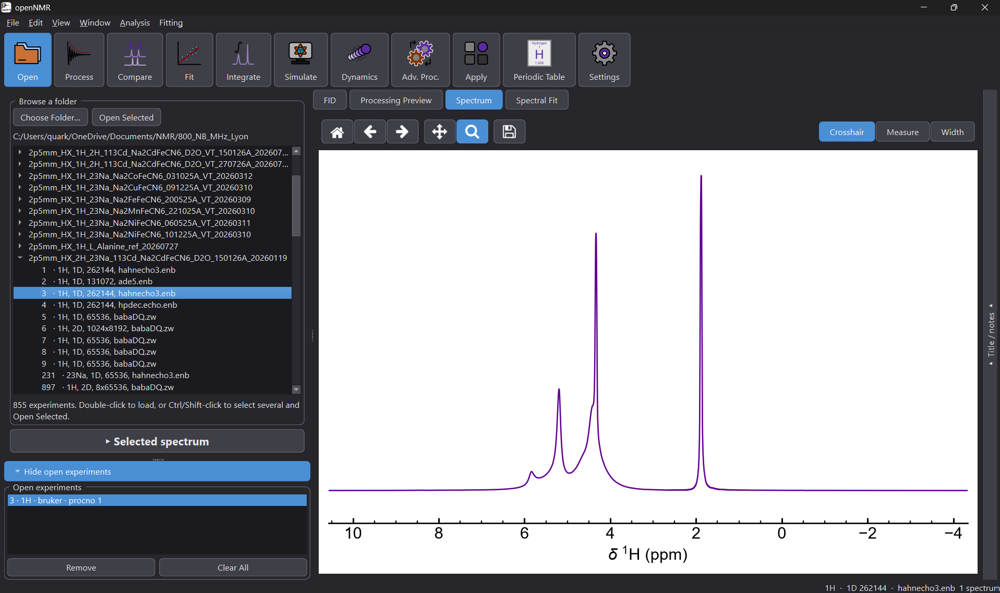
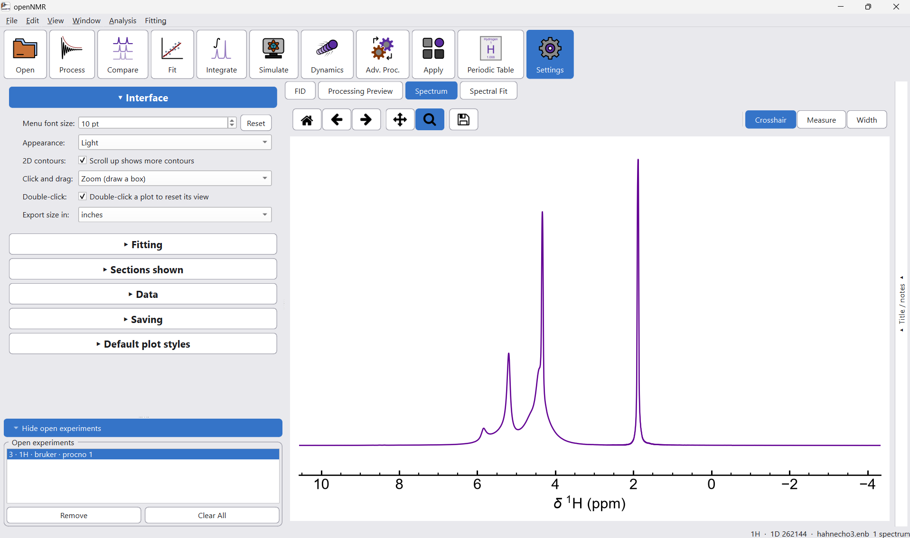

The Open screen


Everything you need is in the left-hand panel. The top half browses your folders, and the bottom half lists the experiments you have loaded. Whatever you load is shown in the viewer on the right.
Load a spectrum
- Click Open in the toolbar. It is highlighted blue while it is active.
- Under Browse a folder, click Choose Folder… and select the folder that contains your experiments. The path is shown underneath, and the experiments found there are listed, with a count at the bottom of the list.
- To load a single experiment, double-click it. To load several at once, Ctrl-click or Shift-click to select them, then click Open Selected. That button is greyed out until something is selected.
- Your experiments appear under Open experiments, and the data is drawn in the viewer.
Each entry in the list has a small arrow beside it. TODO Say what it expands to (e.g. individual experiments or processed data sets).
Supported data
TODO List the data formats openNMR can read, and what the folder should look like for each.
Manage open experiments
Every experiment you have loaded is listed under Open experiments.
- Remove
- Takes the selected experiment out of the list. check
- Clear All
- Empties the list so you can start again.
- Hide open experiments
- Collapses the list to give the folder browser more room. Click it again to bring the list back.
- Selected spectrum
- TODO Describe what this panel shows and what you can change in it.
Look at your data
Three tabs above the plot switch the view: FID, Spectrum and Spectral Fit. check
The buttons above the plot move you around it:
- Home
- Resets the view to show the whole spectrum.
- Back / Forward
- Step through your previous views.
- Pan
- Drag the spectrum around.
- Zoom
- Drag a box around the region you want to look at.
- Save
- Save the plot. TODO Say which formats, and whether data can be saved too.
The three buttons at the top right of the plot change what the cursor does:
- Crosshair
- Shows the position of the cursor on the plot. check
- Measure
- Measure the distance between two points. check
- Width
- Measure the width of a peak. check
The Title / notes tab at the right edge of the window opens a panel for naming and annotating the spectrum. TODO Describe what the title and notes are used for.